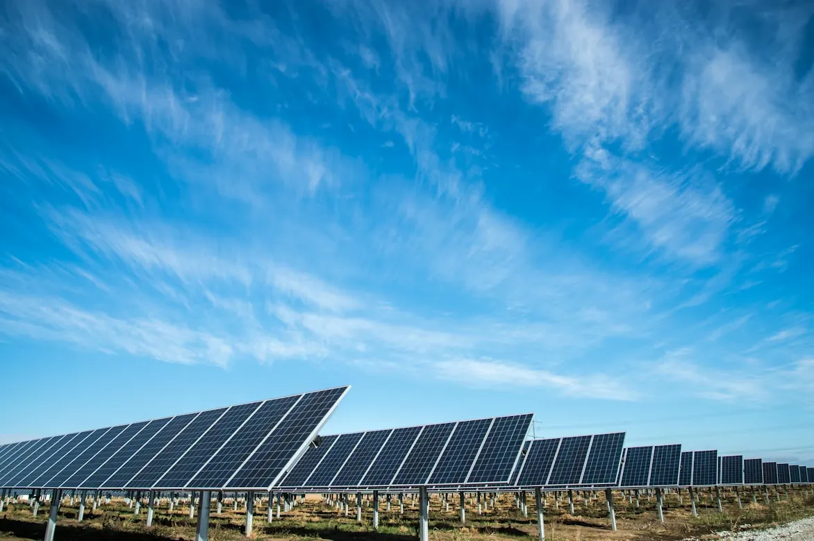
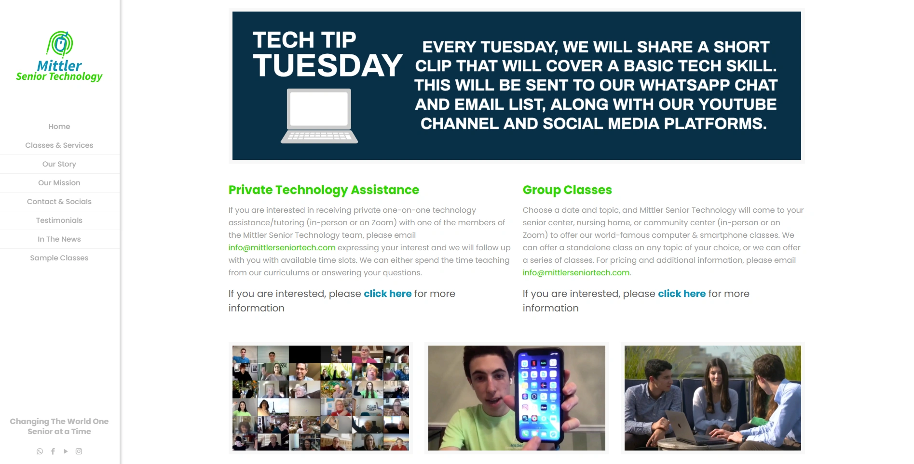
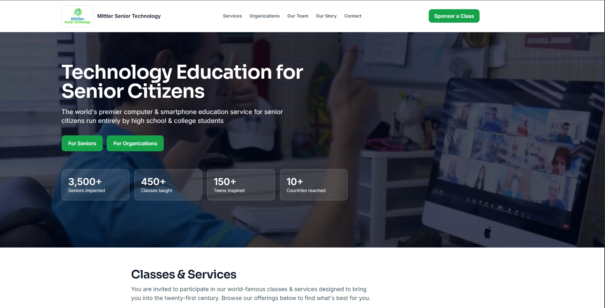
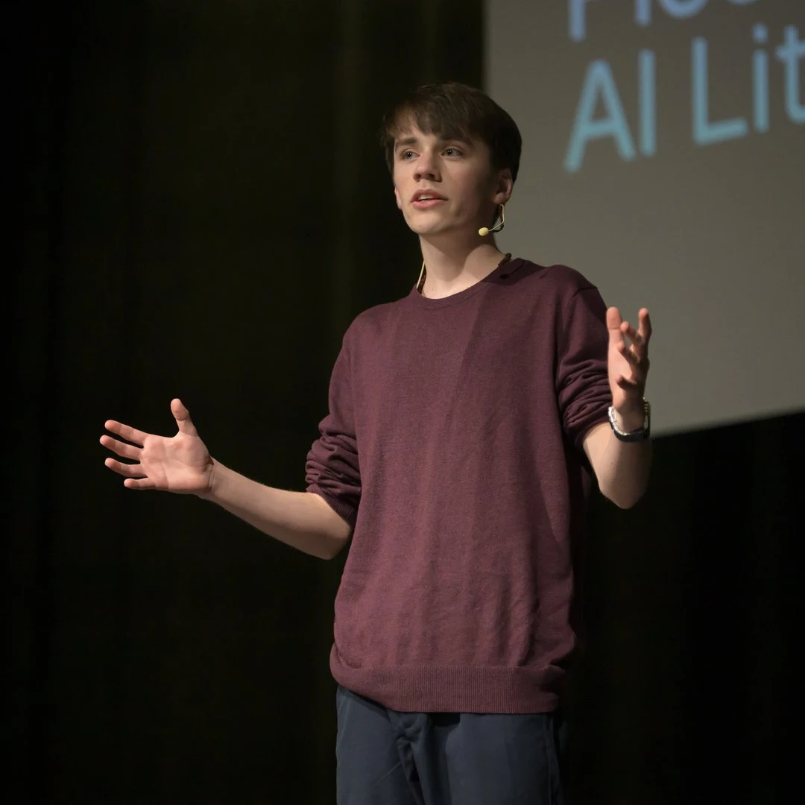
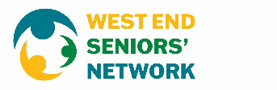
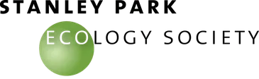
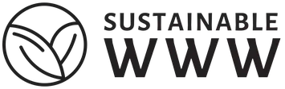
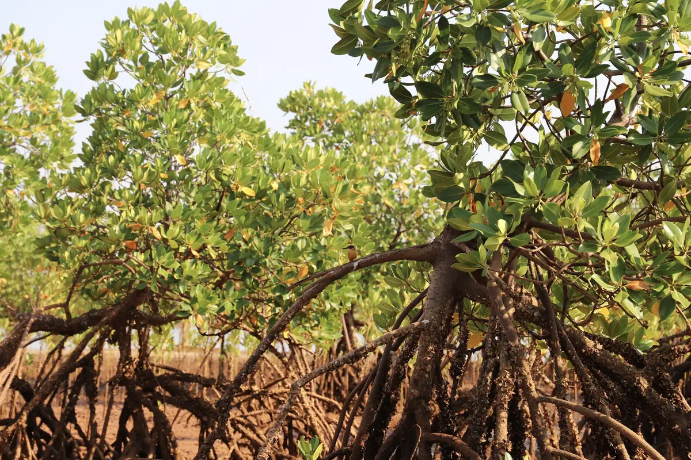

Making the internet sustainable
Building digital sustainability projects that improve efficiency, accessibility, and responsible technology use.
Up to 98% Lower Carbon, Energy, and Water Impact
Award-Winning Team
Not-for-Profit
17,000+ Trees Planted
32 Countries Impacted
Youth-Founded
Vancouver-Based

17,000+
Trees Planted
$870,000+
In-Kind Technology Grants Secured
32
Countries Impacted
Our ecosystem
Explore what we are building at Oasis of Change
From sustainable web development to digital access and emerging innovation, these initiatives reflect how Oasis of Change turns ideas into practical, mission-driven platforms with measurable impact.
Web-Ready is our sustainable web design initiative, helping organizations build faster, lower-carbon, and more accessible websites with measurable environmental impact.
Explore Web-ReadyVCASSE is an upcoming initiative exploring how AI can be applied responsibly to real-world sustainability, safety, and social-impact challenges.
Learn More About VCASSESustainable Technology Week is one of our signature projects, focused on raising awareness around digital sustainability, responsible technology, and the environmental impact of the online world. In 2025, it was officially recognized by the City of Vancouver, and the initiative continues to grow.
Learn More About Sustainable Technology WeekThe Web-Ready Access Platform helps nonprofits and mission-driven organizations access tools, resources, and in-kind technology support to strengthen their digital presence.
Explore the WRA PlatformCase Study · Before & After
What a sustainable redesign looks like.
Mittler Senior Technology's site went from an F-rated, heavyweight page to an efficient, accessible experience — same mission, a fraction of the footprint.


Energy per visit
↓98.2%
0.0139→0.0002 kWh
Carbon per visit
↓98.1%
5.31g→0.10g CO₂
Water per visit
↓98.1%
2.95L→0.06L
Founded by a pioneer in digital sustainability
Gabriel Dalton taught himself to code at 10 years old and founded Oasis of Change to tackle the digital world’s carbon problem.
Now one of the few specialists in Canada focused on sustainable web development, his work earned the 2025 Impact in Innovation Award at the City of Vancouver Awards Ceremony.
View Gabriel’s Biography
Trusted by organizations making a difference
-

-

-

-

Are you a nonprofit? Let's partner up.
Oasis of Change works alongside mission-driven organizations on sustainable web development, accessibility audits, and low-carbon digital partnerships — shaped around nonprofit budgets and timelines. See what support fits your team.
Explore How We Help NonprofitsTransparency & Impact
2025–2026 tree planting complete
Explore Oasis of Change's live transparency platform with verified planting data, project locations, partner contributions, and climate outcomes all in one place. See how every tree is counted across our global impact ecosystem.
2025–2026 FY
7,144
trees planted
Total reach
32
countries
All-time total
17,000+
trees planted
